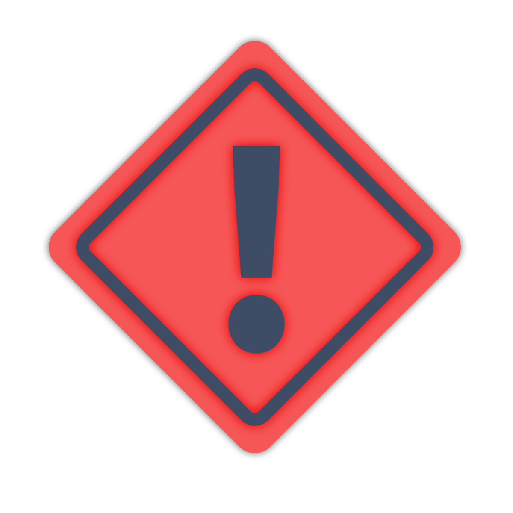

Home
About Me
HTML projects
Personal projects

IF YOU ARE IN NEED OF IMMEDIATE MEDICAL ASSISTANCE DIAL 911 OR YOUR LOCAL EMERGENCY SERVICES
HELPjimin
What should you do if you get sick with COVID-19?
How long does COVID-19 recovery take?
Can I treat my COVID-19 symptoms at home?
Stay home. Most people with COVID-19 have mild illness and can recover at home without medical care. Take care of yourself. Get rest and stay hydrated. Take over-the-counter medicines, such as acetaminophen, to help you feel better.
Most people with mild cases appear to recover within one to two weeks. However, surveys conducted by the CDC found that recovery may take longer than previously thought, even for adults with milder cases who do not require hospitalization.
Most people who become sick with COVID-19 will only experience mild illness and can recover at home. Symptoms might last a few days, and people who have the virus might feel better in about a week. Treatment is aimed at relieving symptoms and includes rest, fluid intake and pain relievers.